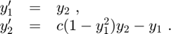

DEMOAWA Short demonstration of the AWA toolbox
This toolbox is a MATLAB/INTLAB-implementation of the well-known verified ODE-solver AWA written in Pascal by Rudolf Lohner, Institute for Applied Mathematics, Univ. of Karlsruhe.
For details see:
[L] R. Lohner: Einschliessung der Loesung gewoehnlicher Anfangs- und Randwertaufgaben und Anwendungen, Dissertation, Univ. Karlsruhe, 1988
[AWA] R. Lohner: Pascal implementation according to [L], available from http://www2.math.uni-wuppertal.de/~xsc/xsc/pxsc_software.html#awa
Contents
Syntax
Calling INTLAB-AWA is similar to calling a MATLAB ODE solver like ode45:
[T,Y] = awa(odefun,jacobimat,tspan,y0) [T,Y] = awa(odefun,jacobimat,tspan,y0,options) [T,Y,Z] = awa(odefun,jacobimat,tspan,y0,options)
Description
[T,Y] = awa(odefun,jacobimat,tspan,y0), where tspan = [t0 tf], integrates the system of differential equations y' = f(t,y) from t0 to tf with initial conditions y0. Each row in the interval solution array Y corresponds to a value at time points returned in the floating-point column vector T.
Precisely, this means y_i(T(j)) is contained in Y(j,i) for i = 1,...,n and j = 1,..,m, where n is the dimension of the ODE, m := length(T), T(1) = t0, and T(m) = tf. In other words: The j-th row of Y is an inclusion of the n components y_i of the true solution y at time t = T(j).
The initial condition y0 may be an interval vector. This means that the computed inclusion Y contains the true solution of the differential equation for any initial values y_i(t0) in the interval y0(i), i = 1,...,n. This allows to model uncertainties in the initial values.
The right-hand side f(t,y) of the ODE and its Jacobian matrix w.r.t. y must be implemented by the user and passed to awa by corresponding function handles odefun and jacobimat, respectively. See the detailed description in section "Input Arguments".
Introductory example
Solve the ODE
Use a time interval [0,2] and the initial condition y0 = 1.
tspan = [0,2]; y0 = 1; lambda = 0.5; odefun = @(t,y) lambda.*y; % odefun must accept two inputs (t,y) even though t is not used. jacobimat = @(t,y) lambda; % jacobimat must accept two inputs (t,y) even though none of them is used. [T,Y] = awa(odefun,jacobimat,tspan,y0);
Use the function awa_display to display the result.
format long e awa_disp(T,Y);
t = 0
[y] = [ 1.000000000000000e+000, 1.000000000000000e+000] d([y]) = 0.00e+00
t = 1.613983983219197e-01
[y] = [ 1.084044765943883e+000, 1.084044765943885e+000] d([y]) = 4.44e-16
t = 4.227564344556898e-01
[y] = [ 1.235379508526132e+000, 1.235379508526134e+000] d([y]) = 8.88e-16
t = 6.831745231204974e-01
[y] = [ 1.407179380616975e+000, 1.407179380616978e+000] d([y]) = 1.11e-15
t = 9.421281365415521e-01
[y] = [ 1.601697602382888e+000, 1.601697602382890e+000] d([y]) = 1.55e-15
t = 1.199735426655289e+00
[y] = [ 1.821877774300389e+000, 1.821877774300392e+000] d([y]) = 2.00e-15
t = 1.456111866895738e+00
[y] = [ 2.071050431606315e+000, 2.071050431606318e+000] d([y]) = 2.66e-15
t = 1.711365990452766e+00
[y] = [ 2.352980906614629e+000, 2.352980906614633e+000] d([y]) = 3.55e-15
t = 1.965599317747809e+00
[y] = [ 2.671926262366541e+000, 2.671926262366548e+000] d([y]) = 4.88e-15
t = 2
[y] = [ 2.718281828459042e+000, 2.718281828459049e+000] d([y]) = 5.77e-15
For example, at the final grid point t = 2 the solution y(t) = y(2) = exp(1) is contained in the interval
[y] = [ 2.718281828459042e+000, 2.718281828459049e+000]
with diameter d([y]) = 5.78e-15 .
Example II - The van der Pol equation, a second order ODE
where c > 0 is a scalar parameter. Rewrite this equation as a system of first-order ODEs using the substitution y_1 := y and y_2 := y'. The resulting system of first-order ODEs is

The Jacobian matix of the van der Pol system is
The function files vdp_fun.m and vdp_jac.m represent the van der Pol equation and its Jacobian matrix, respectively, using c = 1.
function dydt = vdp_fun(t,y)
dydt = [ y(2) ; (1-sqr(y(1))).*y(2)-y(1) ];
function J = vdp_jac(t,y)
J = typeadjust([0,1;0,0],y);
J(2,1) = -2.*y(1).*y(2) - 1;
J(2,2) = 1 - sqr(y(1));
For the use of typeadjust, see section "Input arguments".
Solve the ODE using the awa function on the time interval [0,10] with interval initial values Y_0 = [2.999,3.001]x[-3.001,-2.999] . The resulting output is a floating-point column vector of time points T and a solution interval array Y of data type intval. Each row in Y corresponds to a time returned in the corresponding row of T. The first column of Y contains inclusions for y_1, and the second column for y_2.
[T,Y] = awa(@vdp_fun,@vdp_jac,[0,10],midrad([3;-3],1e-3));
Plot the enclosures for y_1 and y_2 against t by using INTLAB's plot function. For comparison, the system is also solved twice with ode45 with initial condition y_0 = [3,-3] which is the midpoint of Y_0. First, ode45 uses its default options. The result is stored in [t,v]. Second, ode45 is executed with higher accuracy. The result is stored in [s,w]. The inclusion computed by awa and both approximations by ode45 are displayed in one plot.
plot(T,Y); % Plot awa enclosures for y_1 and y_2. title('Solution of van der Pol Equation with INTLAB-AWA'); xlabel('Time t'); ylabel('Solution y'); hold on; [t,v] = ode45(@vdp_fun,[0,10],[3;-3]); % Execute ode45 with default options. options = odeset('RelTol',1e-12,'AbsTol',[1e-12 1e-12]); [s,w] = ode45(@vdp_fun,[0,10],[3;-3],options); % Execute ode45 with higher accuracy. plot(t,v,'--b',s,w,'--g'); % Plot both ode45 results.
Zooming in on the plot for the first component y_1 at t = 2 shows that both ode45 results, v_1 (blue dashed line) and w_1 (green dashed line), are contained in the enclosure Y_1 := Y(:,1) computed by awa (red tube).
axis([1.99 2.01 1.44 1.48]); % Zoom in on the plot for y_1 at t = 2.
Zooming in on the plot at the final time t = 10 shows that the numerical approximation v_1 is not contained in the awa enclosure anymore, thus cannot be correct. Contrary, w_1 is still quite centered in the red tube confirming its higher accuracy.
axis([9.95 10 -0.65 -0.44]); % Zoom in on the plot for y_1 at t = 10.
Example III - ODE system for the motion of a rigid body without external forces
Its Jacobian matrix reads:
The implementation of the ODE function and its Jacobian matrix may look as follows:
function dydt = r3body_fun(t,y) persistent c; % Since creating intervals is quite expensive, c is defined as persistent. if isempty(c) c = -intval('0.51'); % The interval c includes -0.51 which is not a floating-point number. end dydt = y; % just cheap storage preallocation dydt(1) = y(2).*y(3); dydt(2) = -y(1).*y(3); dydt(3) = c.*y(1).* y(2);
function J = r3body_jac(t,y) persistent c; if isempty(c) c = -intval('0.51'); end J = typeadjust(zeros(3),y); J(1,2) = y(3); J(1,3) = y(2); J(2,1) = -y(3); J(2,3) = -y(1); J(3,1) = c.*y(2); J(3,2) = c.*y(1);
Solve the ODE on the time interval [0,10] with interval initial values y0 = [0;1;1]. The function awa shall use a Taylor expansion of order 12, evaluation method 1 (parallelepiped enclosure) and initial step size h0 = 1e-3. Also a minimum step size h_min = 1e-4 is guessed (which might be wrong).
options = awaset('order',12,'h0',1e-3,'h_min',1e-4,'EvalMeth',1); [T,Y,Z] = awa(@r3body_fun,@r3body_jac,[0,10],[0;1;1],options);
Now, if enclosures at some specific (floating-point) times t, say t = 7, 8, 9, are wanted which are not necessarily on the returned time grid T, then this can be done by the function awa_disp as follows:
awa_disp(T,Y,Z,[7;8;9]);
t = 7
[y_1] = [ -4.287694889056125e-001, -4.287694889053748e-001] d([y_1]) = 2.38e-13
[y_2] = [ 9.034139280438438e-001, 9.034139280439699e-001] d([y_2]) = 1.26e-13
[y_3] = [ 9.519663491666174e-001, 9.519663491667010e-001] d([y_3]) = 8.34e-14
t = 8
[y_1] = [ 5.109096692259931e-001, 5.109096692262768e-001] d([y_1]) = 2.84e-13
[y_2] = [ 8.596344047855961e-001, 8.596344047857759e-001] d([y_2]) = 1.80e-13
[y_3] = [ 9.310614201246203e-001, 9.310614201246822e-001] d([y_3]) = 6.16e-14
t = 9
[y_1] = [ 9.756660689724775e-001, 9.756660689725520e-001] d([y_1]) = 7.42e-14
[y_2] = [ 2.192617656037000e-001, 2.192617656040074e-001] d([y_2]) = 3.07e-13
[y_3] = [ 7.172995316786409e-001, 7.172995316786677e-001] d([y_3]) = 2.65e-14
The method is mentioned in [L], but not impelemted in [AWA]. For calculating such enclosures at intermediate time points the third output argument Z of the function awa is essentially needed, see its description in the section "Output Arguments".
An example with known exact solution where floating-point evaluation fails
Occasionally, as seen for van der Pol's equation in Example II, the approximation by MATLAB's ode45 with default settings may be outside the AWA inclusion. Very rarely, even MATLAB's floating-point evaluation of an exactly known solution may be outside the AWA inclusion. Consider
Use a time interval [0,1] and the initial condition y0 = 0.
tspan = [0,1]; y0 = 0; odefun = @(t,y) tan(t); jacobimat = @(t,y) 0; [T,Y,Z] = awa(odefun,jacobimat,tspan,y0);
The exact solution of the ODE is y(t) = -log(cos(t)). An inclusion Y_ based on the AWA result at t = 1/64 is computed by
t = 1/64; [t,Y_] = awa_disp(T,Y,Z,t);
t = 1.562500000000000e-02
[y] = [ 1.220752798771310e-004, 1.220752798771312e-004] d([y]) = 1.36e-19
MATLAB's floating-point evaluation y is not contained in the inclusion Y_:
ysol = @(t) -log(cos(t)); y = ysol(t) incl = in(y,Y_)
y =
1.220752798771633e-04
incl =
logical
0
Using ordinary interval evaluation produces Y which is wider than the AWA inclusion Y_ due to data dependencies. Note that the floating-point approximation is close to the left boundary of Y.
y = ysol(t) Y = ysol(intval(t))
y =
1.220752798771633e-04
intval Y =
[ 1.220752798770521e-004, 1.220752798772744e-004]
Next we check the validity of the AWA inclusion Y_ by long arithmetic and the power series of the cosine and logarithm. Note that X is an inclusion of 1-cos(t), so that YY is the desired inclusion of ysol(t).
longprecision(20);
longinit('WithErrorTerm')
T = long(t);
T2 = T^2;
X = - ((( T2/56 - 1)*T2/30 + 1)*T2/12 - 1)*T2/2;
X = addlongerror(X,t^10/prod(1:10));
One = long(1);
YY = (((X/4 + One/3)*X + One/2)*X + One)*X;
YY = long2intval( addlongerror(YY,long2dble(X)^5/5) )
rYY = rad(YY)
in(YY,Y_)
===> Long arithmetic computations with error terms, i.e. valid long error bounds
intval YY =
[ 1.220752798771311e-004, 1.220752798771312e-004]
rYY =
2.710505431213761e-20
ans =
logical
1
Input Arguments
odefun : This is, as for all MATLAB ode-solvers like ode45, a function handle for the right-hand side f of the ODE y' = f(t,y). The function dydt = odefun(t,y), for a scalar t and a column vector y, must return a column vector dydt that corresponds to f(t,y). odefun must accept both input arguments, t and y, even if one of the arguments is not used in the function. For example, to solve y' = 5y-3, use the function:
function dydt = odefun(t,y)
dydt = 5.*y-3;
For a system of equations, the output of odefun is a vector. Each element in the vector is the solution to one equation. For example, to solve
use the function:
function dydt = odefun(t,y) dydt = y; % cheap initialization as column vector dydt(1) = y(1) + 2.*y(2); dydt(2) = 3.*y(1) + 2.*y(2);
or alternatively:
function dydt = odefun(t,y)
dydt = [ y(1)+2.*y(2) ; 3.*y(1)+2.*y(2) ];
The implementation may contain INTLAB interval operations and functions. For example, if f(t,y) = cos(*y)+t, then, since is not a floating-point number, odefun may be implemented rigorously as follows:
odefun = @(t,y) cos(intval('pi').*y) + t;
There is one special syntax rule that must be kept: If a constant value, either a floating-point number or an interval, shall be assigned to one of the components of dydt, then a typecasting using the function typeadjust must be done explicitly.
For example, the ODE y' = 1 must be implemented as
function dydt = odefun(t,y)
dydt = typeadjust(1,y);
jacobimat : This is a function handle for the Jacobian matrix J of f with respect to y, i.e.,
where n is the dimension of the ODE. Like odefun, jacobimat must accept both input arguments, t and y, even if one of the arguments is not used in the function.
The implementation of jacobimat is due to the user which is different to Lohner's original Pascal implementation [AWA], where J is derived automatically. In [AWA] this is comparatively easily possible due to strict syntax rules for the ODE function. Since INTLAB-AWA allows a quite free, almost arbitrary coding of the ODE function, such an automatic derivation of J is not really possible and/or feasible. Anyway, in most applications the Jacobian can easily be determined by hand or by using a symbolic math toolbox.
For example, the Jacobian J for the ODE
is
This can be implemented as follows:
function J = jacobimat(t,y)
J = typeadjust([0 1;0 0],y);
J(2,1) = sqr(y(2));
J(2,2) = 2.*y(1).*y(2);
As described for odefun, this example also shows that constant components must be assigned by using the function typeadjust. An exception of this rule is the situation where the whole matrix J is a constant floating-point or interval matrix. In this case, and only in this case, J can be returned as is without using typeadjust.
tspan = [t0,tf] specifies the integration interval. As stated, it must be a two element vector [t0,tf]. It is allowed that tf < t0. Note that t0 and tf must be floating-point numbers. In general this is no severe restriction and is either fulfilled anyway, or can easily be achieved by a shift and/or scaling of the time variable in the ODE function. This may lead to interval parameters in the ODE function.
MATLAB's ODE solvers like ode45 allow tspan = [t0,t1,t2,...,tf] to contain more than two elements, and in this case they return approximate values for the solution at these points. This is not allowed for AWA. If verified enclosures of the solution at specific intermediate points [t1,t2,...] are sought, then this can be done a posteriori, see Example 3 and the description of the third output argument Z.
y0 : This is the initial value vector, i.e. y(t0) = y0, which may be a floating-point or interval vector.
options : option structure with components that are parameters of AWA. The function awaset can be used to create options similar to the MATLAB function odeset.
Example: options = awaset('order',20,'h0',1e-3,'EvalMeth',1);
This sets the Taylor expansion order to 20, the initial step size to (approximately) 0.001, and chooses evaluation method 1 (parallelepiped enclosure).
The following options can be set:
- order: order of Taylor expansion up to which the solution is computed in each time step. The order must correspond to the smoothness of the ODE function. The default is order = 10.
- h0: initial step size, where h0 = 0 (default) means that AWA chooses the initial step size automatically.
- h_min: minimum step size. h_min is only used for estimating the total number of integration steps. The default is h_min = 1e-5.
- EvalMeth: evaluation method corresponding to the [AWA] variable E_ART.
The following methods can be chosen:
- interval vector. After each integration step the solution is enclosed by an interval vector (axis parallel box) which is used as initial value set for the next integration step.
- parallelepiped. In each integration step the solution is enclosed into a parallelepiped which is used as initial value set for the next integration step.
- QR decomposition. In each integration step the solution is enclosed into a not necessarily axis parallel box which is used as initial value set for the next integration step. (In general this works quite well for badly conditioned fundamental systems. The box is implicitly given by the Q of some QR-decomposition.)
- intersection of the inclusion methods 0 and 1.
- intersection of the inclusion methods 0 and 2.
- AbsTol: absolute error tolerance which corresponds to [AWA] variable E_A. The default is AbsTol = 1e-16.
- RelTol: relative error tolerance which corresponds to [AWA] variable E_R. The default is RelTol = 1e-16.
Output Arguments
- T: Array of time grid points with T(1) = t0 and T(m) = tf, where m:= length(T).
- Y: Enclosure of solution at time grid points. y_i(T(j)) is contained in Y(j,i), j = 1,...,m, i = 1,...,n.
- Z: Enclosure of Taylor coefficients. If t is an intermediate time point in the interval (t_j, t_{j+1}), then y_i(t) is contained in the interval evaluation of

Enjoy INTLAB
The AWA toolbox as well as this demo was written by Florian Buenger, Institute for Reliable Computing, Hamburg University of Technology.
INTLAB was designed and written by S.M. Rump, head of the Institute for Reliable Computing, Hamburg University of Technology. Suggestions are always welcome to rump (at) tuhh.de